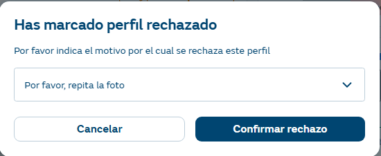

Accediendo a la opción de 'Validación de perfiles' el usuario puede consultar todos los perfiles que están pendientes de validar porque no se ha podido crear correctamente el perfil. Son los perfiles que cumplen que en la entidad PROFILE el campo prf_status_stage tiene el valor PENDING_MANUAL_PROCESSING.
El perfil se crea en la primera lectura de contador enviada por un dispositivo móvil ya que además de la información de la lectura, se está validando el número de serie reconocido por el OCR. Si esta validación no se puede realizar, el perfil queda pendiente de validación (ver en el DF de backend, apartado NU_01 - Ciclo de vida de las lecturas).
Al entrar en la pantalla se muestra un número con la cantidad de perfiles pendientes de validar y el perfil pendiente de validar más antiguo que hay en el sistema.
Además, hay que tener en cuenta el rol del usuario:
Validador → verá todos los perfiles pendientes de validar y no tienen la marca de supervisión (de la entidad PROFILE campo prf_manual_supervision=0)
Manager → verá solo los perfiles pendientes de validar con la marca de supervisión (de la entidad PROFILE campo prf_manual_supervision=1)
Administrador → verá todos los perfiles pendientes de validar, independientemente de si están marcados para supervisión o no

Si se pulsa el botón “Confirmar rechazo” ,
-De la entidad PROFILE se actualiza:
pfr_status_stage → pasa a tener el valor DISCARDED
prf_status_result_manual → pasa a tener el valor NOK
-De la entidad IMAGE se actualiza:
image_status_stage → pasa a tener el valor DISCARDED
image_status_result_manual → pasa a tener el valor NOK
image_date_processed_manual → fecha en la que ha rechazado
Si se pulsa el botón “Cancelar”, no se hace nada.
Si se ha rechazado el perfil y el cliente consulta la lectura en la app, la verá con estado “Descartada”.
Botón “Enviar a Supervisión” → únicamente aparecerá a usuarios con rol Validador y si se pulsa, el perfil solamente lo verán los usuarios con rol Manager. Cuando se les muestre a los usuarios Administradores, se les destacará que son unas imágenes que han sido saltadas para supervisión.
En la entidad PROFILE el campo prf_manual_supervision queda informado con valor 1.